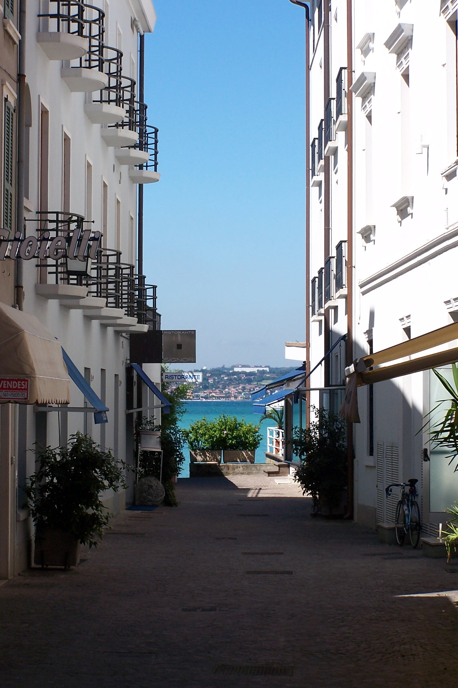

Sirmione
西尔米奥
加尔达湖的半岛明珠 · 罗马诗人与湖底温泉
一条 4 公里长的狭长半岛伸入加尔达湖，最窄处仅几十米--这就是西尔米奥：古罗马诗人卡图洛诗中的"半岛中的小岛"。半岛入口被中世纪城堡锁住，尖端是罗马别墅的废墟，湖底涌出 37°C 的温泉。
从维罗纳火车加接驳 1.5 小时可达，是意大利北部"一天逃离"的经典选项：上午看废墟、中午吃湖鱼、下午泡温泉看日落。
大区伦巴第 Lombardia
人口约 8 千（镇）
湖泊加尔达湖（意最大）
距维罗纳约 45 分钟（火车+车/船）
温泉37°C 硫磺泉
最佳季4-6 月 / 9-10 月
半岛动线
- 城堡 -> 老城主街与侧巷 -> 半岛尖端 Grotte di Catullo
- 步行约 40 分钟贯穿全半岛；小火车或租自行车可省力
- 西侧湖边栈道看日落；东侧看晨光
温泉选择
- Aquaria：现代水疗中心（湖景露天池）
- Catullo Hotel：历史浴场酒店
- 傍晚场（17:00 后）人最少且日落正对湖面
景点导览
Da Vedere · 3 处

实用贴士
Consigli
- 从维罗纳：Porta Nuova -> Peschiera 火车 20 分钟，再公交或船 15 分钟
- 老城 ZTL 禁车：自驾停城外停车场（€1.5-2/h）
- 旺季（7-8 月）日游客可达数万：上午 9 点前或 10 月去
- 温泉日票 €40-60（旺季浮动），泳帽必需
- 特产：柠檬酒（limoncello）与本地橄榄油
- 从 Peschiera 坐船到 Sirmione 比公交浪漫（€5-8，湖上视角看半岛全貌）